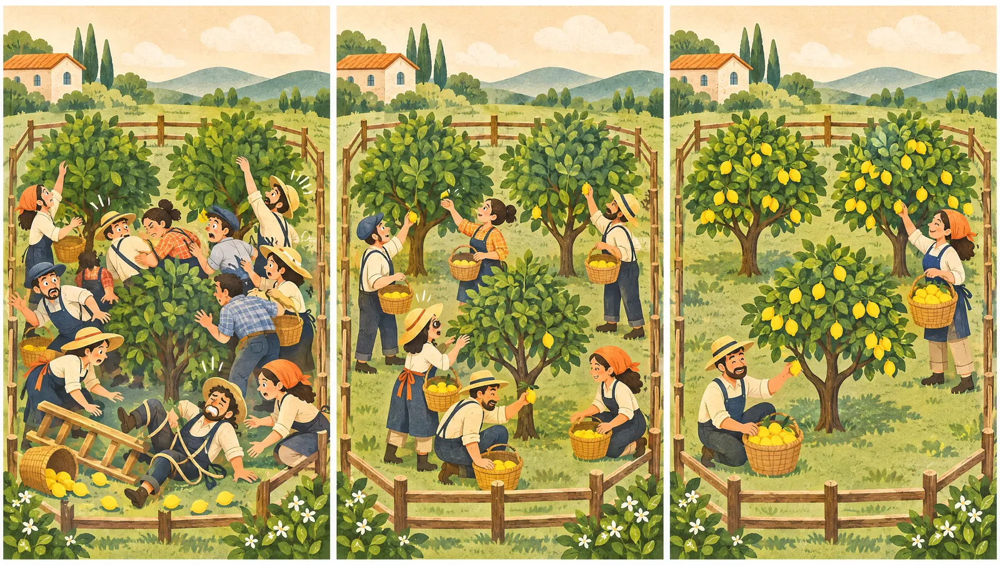
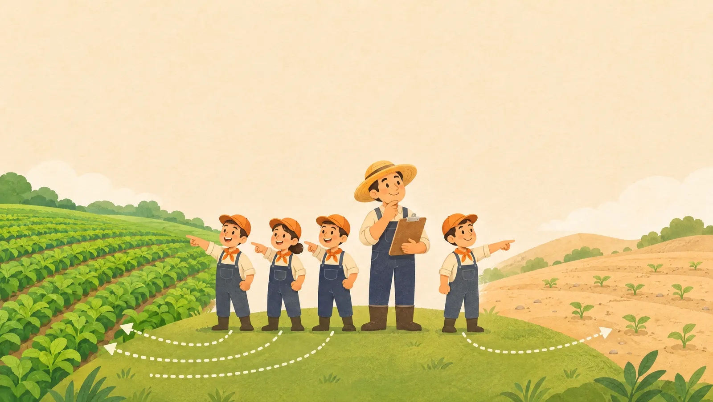

q
quantity = כמות
כמה מוצרים יצאו. קוראים לזה גם "התפוקה הכוללת", ובקיצור TP (Total Product).
איך מפעל הופך עובדים ומכונות למוצרים? ומה קורה כשמוסיפים עוד עובד, ועוד עובד? הכול מוסבר מאפס, עם דוגמאות, ניסויים, שאלות מבחן פתורות ורשימת מלכודות. לא צריך לדעת כלום מראש.
אין זמן לכול? קראו לפחות את החלקים האלה, לפי הסדר. את השאר אפשר לקרוא אחר כך.
הכתוביות פועלות כברירת מחדל. אפשר לכבות אותן בכפתור הכתוביות (CC) בנגן.
בסרטון הזה נלמד את פונקציית הייצור: איך מפעל הופך עובדים ומכונות למוצרים.
תחשבו על מטבח. מכניסים מצרכים, עושים לפי מתכון, ויוצאת עוגה. פונקציית הייצור היא המתכון של המפעל.
פונקציית הייצור אומרת כמה הכי הרבה מוצרים אפשר לייצר מכמות מסוימת של עובדים ומכונות, בטכנולוגיה של היום.
מושג ראשון: תפוקה ממוצעת, AP. כמה מייצר עובד אחד בממוצע. מחלקים את כל המוצרים במספר העובדים.
מושג שני: תפוקה שולית, MP. כמה הוסיף העובד האחרון שהצטרף. בכמה עלתה התפוקה כשהוא הגיע.
ועכשיו הלב של השיעור. בפרדס בגודל קבוע, מוסיפים עוד ועוד קוטפים.
בהתחלה כל קוטף מוסיף יותר מהקודם. אחר כך כל קוטף מוסיף פחות. ובסוף, יותר מדי קוטפים מפריעים זה לזה, והתפוקה יורדת.
זה חוק התפוקה השולית הפוחתת. הוא קורה כי משהו נשאר קבוע: הפרדס לא גדל.
במפעל האופנועים: העובד הראשון מוסיף 4 אופנועים, השני 8, השלישי 12. אחר כך 8, 3, ובסוף מינוס 5.
שימו לב: כשהתוספת יורדת, התפוקה הכוללת עדיין עולה. היא יורדת רק כשהתוספת שלילית.
השולית והממוצעת עובדות כמו ממוצע ציונים. ציון חדש מעל הממוצע מעלה אותו, וציון מתחת לממוצע מוריד אותו.
לכן קו התפוקה השולית חוצה את קו הממוצעת, בדיוק בשיא של הממוצעת.
טווח קצר: תקופה שבה חלק מגורמי הייצור קבועים. טווח ארוך: תקופה שבה אפשר לשנות הכול. וזה תלוי במפעל, לא בלוח השנה.
ואיך מחלקים עובדים בין שני שדות? כל עובד הולך לשדה שבו הוא מוסיף הכי הרבה.
שלושה עובדים לשדה א׳, ואחד לשדה ב׳. סך הכול 46 יחידות. זה הכי הרבה שאפשר.
באתר תמצאו ניסויים, שאלות מבחן פתורות, ורשימה של מלכודות. בהצלחה!

תחשבו על מטבח. מכניסים מה שצריך: מצרכים (קמח, ביצים), כלים (תנור) ואנשים (אופה). עושים לפי מתכון, ויוצאת עוגה. כל מפעל עובד בדיוק ככה:
במשפט אחדפונקציית הייצור היא "המתכון" של המפעל. היא אומרת כמה הכי הרבה מוצרים אפשר לייצר מכמות מסוימת של עובדים ומכונות.
השיעור כולו עונה על שאלה אחת: מה קורה כשמוסיפים עוד עובד? בהתחלה כל עובד חדש מוסיף יותר מהקודם. מנקודה מסוימת כל עובד חדש מוסיף פחות מהקודם. ואם ממשיכים להוסיף, עובד נוסף יכול אפילו להזיק. זה "חוק התפוקה השולית הפוחתת", והוא הלב של השיעור.
↑ חזרה לתפריטבשיעור יש הרבה אותיות. כמעט כל אות היא קיצור של מילה, בדרך כלל באנגלית. אם תזכרו את המילה, תזכרו את האות. כאן חמשת הסימנים החשובים. את כל השאר תמצאו בדף העזר שמתחת.
"שולי" = "האחרון שנוסף". בכלכלה המילה "שולי" חוזרת כל הזמן. תמיד היא אומרת: מה קורה כשמוסיפים עוד יחידה אחת.
כל דבר שעוזר לייצר נקרא גורם ייצור. יש שלושה סוגים:
אותו רעיון, בקטן. אות קטנה (q, f) = מפעל אחד. אות גדולה (Y, F) = כל המשק.
בכלכלה קוראים לעסק שמייצר פירמה. המטרה המקובלת של פירמה היא מקסימום רווח. יש גם מטרות אחרות: השגת כוח, צמיחה, הגדלת נתח השוק. בקורס נניח שהמטרה היא מקסימום רווח.
הצעד הראשון בדרך לרווח הוא לדעת: אם אעסיק כך וכך עובדים ואקנה כך וכך מכונות, כמה מוצרים אקבל? על זה עונה פונקציית הייצור.
↑ חזרה לתפריטבהגדרה יש שלוש מילות מפתח, ובמבחן שואלים בדיוק עליהן:
הפונקציה מראה כמה הכי הרבה אפשר לייצר. אם המפעל מבזבז, הוא מייצר פחות. אבל זה לא מה שהפונקציה מראה.
הפונקציה נכונה לטכנולוגיה של היום. שיפור טכנולוגי משנה את הפונקציה עצמה: מאותם עובדים ומכונות יוצא יותר.
בגרף: כל עקומת התפוקה זזה למעלה. זו תזוזה של העקומה, לא תנועה לאורכה.
אי אפשר לייצר את אותה כמות עם פחות עובדים או פחות מכונות. אם אפשר, השילוב הזה לא "נכנס" לפונקציה.
קשר לשיעור 1: זה בדיוק כמו עקומת התמורה. שם, נקודה על העקומה היא הכי הרבה שאפשר, ונקודה בפנים היא בזבוז. גם פונקציית הייצור מתארת רק את "הקצה", את המקסימום.
שימו לב: הפונקציה אומרת כמה אפשר לייצר, לא כמה כדאי לייצר. את זה נלמד בשיעורים הבאים.
120. הפונקציה מראה את המקסימום. ייצור של 100 הוא בזבוז, ולכן הוא לא על הפונקציה.
במאפייה יש גורם ייצור אחד בלבד: שעות עבודה (L). בכל שעה מכינים 2 עוגות. אז המתכון הוא:
| שעות (L) | עוגות (q) | ממוצע לשעה (AP) | כמה הוסיפה השעה האחרונה (MP) |
|---|---|---|---|
| 1 | 2 | 2 | 2 |
| 2 | 4 | 2 | 2 |
| 3 | 6 | 2 | 2 |
| 4 | 8 | 2 | 2 |
| 5 | 10 | 2 | 2 |
כל שעה נוספת מוסיפה תמיד 2 עוגות. לכן הגרף הוא קו ישר, וקוראים לזה פונקציה לינארית. גם הממוצע לשעה הוא תמיד 2.
למה התוספת לא יורדת? במאפייה יש רק גורם ייצור אחד, ואין שום דבר קבוע. לכן אין סיבה שהתוספת תרד. בעוד רגע נראה שבמציאות זה כמעט אף פעם לא ככה.
↑ חזרה לתפריטכל המוצרים, חלקי מספר העובדים.
מאפייה: 6 עוגות ב־3 שעות עבודה, כלומר 2 עוגות לשעה. 6 ÷ 3 = 2
בכמה גדלה התפוקה, חלקי בכמה גדל מספר העובדים.
מאפייה, השעה הרביעית: מ־6 עוגות ל־8 עוגות. (8 − 6) ÷ 1 = 2
Δ ("דלתא") פירושה שינוי. תמיד מחשבים: הערך אחרי השינוי, פחות הערך לפני השינוי.
דימוי שעוזרAP היא כמו ממוצע הציונים שלכם. MP היא כמו הציון במבחן האחרון. כל ציון חדש משנה את הממוצע. בחלק 10 נראה בדיוק איך.
לעובד הראשון תמיד MP = AP, כי q ÷ 1 = q − 0. זו לא נקודת שיא של AP.
מחלקים. אם מ־2 עובדים ל־4 עובדים התפוקה גדלה מ־12 ל־32:
כל עובד חדש הוסיף בממוצע 10. (אלה המספרים של מפעל האופנועים שנראה בחלק 9. 10 הוא הממוצע של 12 ו־8, התוספות של העובד השלישי והרביעי.)
כשהתפוקה תלויה גם בעובדים וגם במכונות, q = f(K, L), יש שתי תפוקות שוליות. MPL היא התפוקה השולית של העבודה: כמה מוסיף עוד עובד. MPK היא התפוקה השולית של ההון: כמה מוסיפה עוד מכונה.
כשמודדים את MPL, המכונות נשארות קבועות. מוסיפים רק עובד, ולא נוגעים במכונות.
למה זה חשוב? אם מוסיפים גם עובד וגם מכונה, אי אפשר לדעת מי מהם הוסיף את התפוקה. כדי למדוד את התרומה של העובד, חייבים להשאיר את כל השאר קבוע.
∂q/∂L היא הנגזרת של q לפי L, כש־K נשאר קבוע. היא מודדת בכמה q משתנה כש־L גדל בכמות קטנה מאוד.
Δq/ΔL (שינוי של עובד שלם) הוא קירוב שלה. לכן בשקף כתוב MP ≈ Δq/ΔL.
כשנתונה נוסחה, גוזרים לפי L, ומתייחסים ל־K כמו למספר קבוע. דוגמה פתורה: שאלה 16 במבחן.
בלטינית קוראים להנחה "כל השאר קבוע" ceteris paribus.
AP = 18 ÷ 4 = 4.5
MP = 18 − 15 = 3
טעות נפוצה: לחלק 18 ב־4 גם עבור MP. MP היא רק התוספת של העובד הרביעי.
תקופה שבה המפעל יכול לשנות רק חלק מגורמי הייצור. השאר קבועים.
גורם משתנה: אפשר לשנות אותו בטווח הקצר. למשל מספר העובדים.
גורם קבוע: גורם שאי אפשר לשנות בטווח הקצר. למשל מבנה המפעל.
תקופה ארוכה מספיק כדי לשנות את כל גורמי הייצור.
בטווח הארוך אין גורמים קבועים בכלל.

הנקודה החשובה: טווח קצר אינו פרק זמן קבוע. הוא תלוי במפעל. במפעל מהתמונה, החלק שהכי קשה לשנות הוא המבנה, שמשתנה רק כל 20 שנה. לכן:
למה זה שונה בין פירמות? כי זה תלוי בהתחייבויות של הפירמה: חוזה שכירות למבנה, או כמה זמן לוקח להכשיר עובד חדש. פירמה עם חוזה שכירות ל־5 שנים לא יכולה לשנות את המבנה לפני שהחוזה נגמר.
זה אותו מפעל מהתמונה: עובדים מתחלפים כל יום, מכונות כל שנתיים, והמבנה כל 20 שנה. בחרו תקופה, ובדקו אם היא טווח קצר או ארוך.
לחצו על תקופה.
ראינו שבטווח הקצר יש גורם קבוע. עכשיו נראה מה הגורם הקבוע עושה לתפוקה השולית.

נחשוב על קטיף בפרדס בגודל קבוע. מוסיפים עוד ועוד קוטפים. מה קורה?
הקוטפים הראשונים מחלקים ביניהם את העבודה ומתמחים: אחד על הסולם, אחד מוריד סלים. כל אחד עושה מה שהוא הכי טוב בו. לכן כל קוטף חדש מוסיף יותר מהקודם.
הפרדס לא גדל. כל קוטף נוסף מוצא פחות לימונים. הוא עדיין מוסיף, אבל פחות מהקודם. כך עד שלא נשאר מה לקטוף (MP = 0).
יותר מדי אנשים. הם נתקעים, מפריעים, מפילים סולמות. עוד קוטף מוריד את סך התפוקה.
שימו לב: בשקפים קוראים לשלושת המצבים האלה "שלבים". בספרים רבים "שלבי הייצור" מוגדרים אחרת, לפי AP. את שתי השיטות תראו בחלק 12, "שלבי הייצור".
למה זה קורה?כי משהו נשאר קבוע: הפרדס. ככל שיש יותר עובדים על אותו פרדס, לכל עובד יש פחות עצים.
ואם מגדילים גם את הפרדס? זה כבר לא המצב שהחוק מדבר עליו. החוק עוסק רק במצב שבו גורם אחד גדל והשאר קבועים. מה קורה כשמגדילים הכול יחד? זו שאלה אחרת, "תשואה לגודל", ונלמד אותה בהמשך.
דימוי נוסףדמיינו מטבח עם כיריים אחת. הטבח השני עוזר מאוד: אחד חותך, אחד מבשל. הטבח החמישי עומד בתור לכיריים. הבעיה היא לא הטבח, אלא שיש רק כיריים אחת.
שימו לב לניסוח: החוק לא אומר שהתפוקה הכוללת יורדת. הוא אומר שהתוספת יורדת. באזור ב׳ התפוקה הכוללת עדיין עולה, רק לאט יותר. זו המלכודת מספר 1 במבחן.
לא נכון. כל העובדים זהים. MP יורדת בגלל הגורם הקבוע: לכל עובד חדש יש פחות כלים ופחות מקום.

במפעל האופנועים יש מכונות קבועות (זה טווח קצר). אפשר לשנות רק את מספר העובדים. הנה מה שקורה:
| עובדים (L) | אופנועים (q) | מה קורה ל־MP | AP = q ÷ L | MP = Δq ÷ ΔL |
|---|---|---|---|---|
| 0 | 0 | – | – | |
| 1 | 4 | עולה | 4 ÷ 1 = 4 | 4 − 0 = 4 |
| 2 | 12 | עולה | 12 ÷ 2 = 6 | 12 − 4 = 8 |
| 3 | 24 | עולה | 24 ÷ 3 = 8 | 24 − 12 = 12 |
| 4 | 32 | פוחתת, חיובית | 32 ÷ 4 = 8 | 32 − 24 = 8 |
| 5 | 35 | פוחתת, חיובית | 35 ÷ 5 = 7 | 35 − 32 = 3 |
| 6 | 30 | שלילית | 30 ÷ 6 = 5 | 30 − 35 = −5 |
לחצו על "+ עוד עובד" ועקבו אחרי הגרפים והטבלה.
סדר השיאיםכשיש לשלושתם שיא, הסדר תמיד אותו סדר: קודם MP, אחר כך AP, ובסוף TP.
בטבלה MP כמעט אף פעם לא יוצאת בדיוק 0. לכן מחפשים את העובד האחרון שהתפוקה השולית שלו עדיין לא שלילית. כאן זה העובד החמישי (MP = 3), כי לשישי MP = −5. לכן השיא: 5 עובדים, 35 אופנועים.
דמיינו טיפוס על גבעה. כל עוד הצעד הבא עולה (MP חיובית), ממשיכים. בפסגה הצעד הבא שטוח (MP = 0). צעד נוסף מוריד (MP שלילית).
↑ חזרה לתפריטזוכרים? AP היא ממוצע הציונים, ו־MP היא הציון במבחן החדש. נסו בעצמכם:
עשיתם 3 מבחנים, והממוצע שלכם 80. הזיזו את הסרגל ובחרו ציון למבחן הרביעי. מה קורה לממוצע?
דימוי: נסיעהחשבו על נסיעה. q הוא המרחק, L הוא הזמן. AP היא המהירות הממוצעת מתחילת הנסיעה. MP היא מה שמראה מד המהירות עכשיו.
אם אתם נוסעים עכשיו מהר יותר מהממוצע, הממוצע עולה. אם לאט יותר, הוא יורד. הממוצע בשיא בדיוק ברגע שמד המהירות שווה לממוצע.
למה דווקא בשיא? בשיא של AP, הממוצע לא עולה ולא יורד. אם העובד השולי היה מעל הממוצע, הממוצע היה עוד עולה. אם מתחת, הממוצע כבר היה יורד. לכן בשיא העובד השולי חייב להיות בדיוק "ממוצע": MP = AP.
בגרף: אם ל־AP יש שיא, קו ה־MP חוצה את קו ה־AP בדיוק בשיא הזה, מלמעלה למטה.
לפני השיא (פחות עובדים) MP מעל AP. אחרי השיא MP מתחת ל־AP.
אם AP רק יורדת (כמו בשאלה 14 במבחן) או קבועה (כמו במאפייה), אין חיתוך כזה.
AP יורדת, כי 6 קטן מ־9. התפוקה הכוללת עדיין עולה (ב־6), כי MP חיובית.
הזיזו את הסרגל ובחרו מספר עובדים. השוו בין הקו המקווקו (מהראשית) לקטע העבה והכחול (מהנקודה הקודמת).
בשקפים יש עוד דוגמה: מפעל עם עד 10 עובדים. לא צריך לזכור את המספרים. צריך לזכור את הצורה:
MP עולה, והיא מעל AP. לכן AP עולה.
MP כבר יורדת, אבל עדיין מעל AP או שווה לה. לכן AP עדיין עולה, ומגיעה לשיא (בערך 204).
MP מתחת ל־AP, ולכן AP יורדת.
המסקנהMP מגיעה לשיא לפני AP. כש־MP מתחילה לרדת, AP יכולה עדיין לעלות.
בדוגמה הזו MP אף פעם לא שלילית. לכן התפוקה הכוללת עולה כל הזמן, עד העובד העשירי.

| L | q | MP |
|---|---|---|
| 1 | 13 | 13 |
| 2 | 25 | 12 |
| 3 | 35 | 10 |
| 4 | 43 | 8 |
| L | q | MP |
|---|---|---|
| 1 | 11 | 11 |
| 2 | 20 | 9 |
| 3 | 27 | 7 |
| 4 | 31 | 4 |
יש 4 עובדים. חלקו אותם בין השדות בעזרת הכפתורים + ו־−. המטרה: כמה שיותר תפוקה.
רוצים לראות את הדרך הנכונה? לחצו על "השלב הבא". בכל לחיצה נשבץ עובד אחד, ונסביר למה.
מסדרים את כל התפוקות השוליות מהגבוהה לנמוכה, ולוקחים את 4 הראשונות:
למה לא כולם לשדה הטוב?4 עובדים בשדה א׳ נותנים רק 43. העובד הרביעי שם מוסיף 8, אבל בשדה ב׳ עובד ראשון מוסיף 11. בגלל חוק התפוקה השולית הפוחתת, מתישהו כדאי לעבור לשדה השני.
כי בכל שדה התוספות רק יורדות. בשדה א׳: 13, 12, 10, 8. אין "הפתעה טובה" שמחכה מאחורי עובד חלש.
מבחן ההחלפה. בודקים אם החלפה אחת משפרת:
אף החלפה לא עוזרת, ולכן 46 הוא המקסימום.
תיקו. אם בשני השדות העובד הבא מוסיף אותו דבר, אפשר לשלוח אותו לכל אחד מהם. שתי התשובות נכונות (שאלה 12 במבחן).
מתי השיטה נכשלת? כשבשדה מסוים התפוקה השולית עולה בהתחלה. אז עובד ראשון "חלש" מסתיר עובד שני חזק, והבחירה עובד אחרי עובד מפספסת אותו (שאלה 13 במבחן).
כשאפשר לחלק עובדים לחלקים קטנים (למשל שעות עבודה), הכלל נהיה: התפוקה השולית בשדה א׳ שווה לתפוקה השולית בשדה ב׳.
↑ חזרה לתפריטבחלק 8 ראינו שלושה אזורים לפי MP: עולה, פוחתת, שלילית. בשקפים קוראים להם "שלבים". בספרים רבים יש חלוקה אחרת, לפי AP, וקוראים לה "שלבי הייצור". כדאי להכיר את שתיהן. הנה החלוקה לפי AP:
כאן MP מעל AP, ולכן AP עולה.
כאן MP יורדת אבל חיובית, ו־AP יורדת.
כאן עובדת פירמה רציונלית
כאן MP שלילית, ולכן TP יורדת.
הכללפירמה רציונלית עובדת בשלב II.
במפעל האופנועים: שלב I עד 4 עובדים (השיא של AP ב־3 עד 4). שלב II בין 4 ל־5 עובדים. שלב III ב־6 עובדים.
| עובדים (L) | MP | AP | אזור לפי MP | שלב לפי AP |
|---|---|---|---|---|
| 1 | 4 | 4 | א׳ (עולה) | I |
| 2 | 8 | 6 | א׳ (עולה) | I |
| 3 | 12 | 8 | א׳ (עולה) | I |
| 4 | 8 | 8 | ב׳ (פוחתת) | הגבול בין I ל־II |
| 5 | 3 | 7 | ב׳ (פוחתת) | II |
| 6 | −5 | 5 | ג׳ (שלילית) | III |
שימו לב: האזורים והשלבים לא מתחילים באותו מקום. אזור ב׳ מתחיל אחרי השיא של MP (אחרי 3 עובדים). שלב II מתחיל בשיא של AP (ב־4 עובדים). אזור ג׳ ושלב III זהים: שם MP שלילית.
↑ חזרה לתפריטנסו לענות לבד, ורק אז פתחו את הפתרון. השאלות בנויות כמו במבחן קשה: עם מלכודות.
AP = q ÷ L = 35 ÷ 5 = 7
MP = (35 − 32) ÷ (5 − 4) = 3
טעות נפוצה: לחלק 35 ב־5 גם עבור MP. MP היא רק התוספת של העובד החמישי.
הטריק: אם AP = q ÷ L, אז q = AP × L.
| L | AP | q = AP × L | MP |
|---|---|---|---|
| 1 | 10 | 10 | 10 |
| 2 | 12 | 24 | 14 |
| 3 | 11 | 33 | 9 |
| 4 | 9 | 36 | 3 |
בדיקה עם הכלל: עובד 2: MP = 14, גדולה מה־AP הקודמת (10), ולכן AP עלתה. ✓ עובד 3: MP = 9, קטנה מה־AP הקודמת (12), ולכן AP ירדה. ✓
הטריק: TP היא סכום כל ה־MP עד אותו עובד.
| L | MP | TP | AP = TP ÷ L |
|---|---|---|---|
| 1 | 6 | 6 | 6 |
| 2 | 10 | 16 | 8 |
| 3 | 8 | 24 | 8 |
| 4 | 5 | 29 | 7.25 |
| 5 | 0 | 29 | 5.8 |
| 6 | −3 | 26 | ≈ 4.33 |
AP בשיא: 8, ב־2 וב־3 עובדים. העובד השלישי מוסיף 8, בדיוק כמו ה־AP הקודמת (8), ולכן AP לא זזה.
TP בשיא: 29, ב־4 וב־5 עובדים. לעובד החמישי MP = 0.
פירמה רציונלית: עובדת בשלב II, מהשיא של AP (3 עובדים) עד השיא של TP. היא לא תעסיק עובד חמישי: הוא מוסיף 0 ועולה כסף. לכן לכל היותר 4 עובדים.
לא נכון. במפעל האופנועים, בין עובד 3 לעובד 5, MP יורדת (12 → 8 → 3). אבל התפוקה הכוללת עולה (24 → 32 → 35). התפוקה הכוללת יורדת רק כש־MP שלילית.
לא נכון. AP יורדת כש־MP קטנה מ־AP, גם אם MP חיובית. עובד 5: MP = 3, כלומר חיובית. אבל 3 קטן מ־8, ולכן AP ירדה מ־8 ל־7.
לא נכון. החוק מדבר על מצב שבו רק גורם אחד גדל, והשאר קבועים (טווח קצר). הסיבה לחוק היא בדיוק הגורם הקבוע: יותר עובדים על אותו פרדס.
כשמגדילים הכול יחד, זה כבר לא המצב שהחוק מדבר עליו. זו שאלה אחרת, "תשואה לגודל", ונלמד אותה בהמשך.
נכון. AP = 2L ÷ L = 2, וגם MP = 2, בכל נקודה. כש־MP קבועה ושווה ל־AP, הממוצע לא זז.
בפונקציה הזו אין תפוקה שולית פוחתת, ול־AP אין שיא.
לא נכון. את MPL מודדים כשרק L משתנה, וכל השאר קבוע (ceteris paribus).
כאן גם K השתנה. לכן אי אפשר לדעת כמה מתוך ה־20 הוסיף העובד, וכמה הוסיפה המכונה.
לא נכון. דוגמה: q = 6L² − L³. כאן MP = 12L − 3L² ו־AP = 6L − L².
כש־L עולה מ־2 ל־3, MP יורדת מ־12 ל־9. אבל AP עולה מ־8 ל־9.
הסיבה: MP עדיין מעל AP. AP יורדת רק כש־MP מתחת ל־AP. (גם במפעל האופנועים: בעובד 4 MP ירדה מ־12 ל־8, ו־AP לא ירדה.)
הקו מהראשית: השיפוע שלו הוא q ÷ L, כלומר AP: 4, 6, 8, 8, 7, 5. הוא הכי תלול ב־3 וב־4 עובדים. שם AP בשיא.
העקומה עצמה: השיפוע של כל קטע הוא MP: 4, 8, 12, 8, 3, −5. הקטע הכי תלול הוא מ־2 עובדים ל־3. שם MP בשיא. זו נקודת הפיתול: אחריה העקומה מתמתנת.
שוב רואים את הסדר: קודם MP בשיא, ואחר כך AP.
מסדרים את ה־MP מהגבוהה לנמוכה: 13 (א׳), 12 (א׳), 11 (ב׳), 10 (א׳), 9 (ב׳), 8 (א׳), 7 (ב׳), 4 (ב׳).
חמשת הראשונים: 3 בשדה א׳ ו־2 בשדה ב׳. q = 35 + 20 = 55
בדיקה: 4 בשדה א׳ ו־1 בשדה ב׳ נותן 43 + 11 = 54. 2 בשדה א׳ ו־3 בשדה ב׳ נותן 25 + 27 = 52. שניהם פחות מ־55. ✓
התפוקות השוליות. שדה א׳: 10, 8, 6, 4. שדה ב׳: 9, 6, 5, 3.
מהגבוהה לנמוכה: 10 (א׳), 9 (ב׳), 8 (א׳), ואז תיקו: 6 (א׳) ו־6 (ב׳).
4 עובדים: העובד הרביעי יכול ללכת לכל שדה. 3 בשדה א׳ ו־1 בשדה ב׳: 24 + 9 = 33. 2 ו־2: 18 + 15 = 33. שתי התשובות נכונות.
בדיקה: 4 ו־0 נותן 28. 1 ו־3 נותן 30. 0 ו־4 נותן 23. כולם פחות מ־33.
5 עובדים: לוקחים את שני ה־6. 3 בשדה א׳ ו־2 בשדה ב׳: 24 + 15 = 39.
בדיקה: 4 ו־1 נותן 37. 2 ו־3 נותן 38. 1 ו־4 נותן 33. כולם פחות מ־39.
בחירה עובד אחרי עובד: עובד 1: בשדה א׳ מוסיף 5, בשדה ב׳ מוסיף 8. הולך לשדה ב׳. עובד 2: בשדה א׳ מוסיף 5, בשדה ב׳ מוסיף 6. שוב הולך לשדה ב׳. סך הכול 14.
אבל 2 עובדים בשדה א׳ נותנים 20! כל האפשרויות: 0 בשדה א׳ ו־2 בשדה ב׳ נותן 14. 1 ו־1 נותן 5 + 8 = 13. 2 בשדה א׳ ו־0 בשדה ב׳ נותן 20. המקסימום: 20.
למה השיטה נכשלה? כי בשדה א׳ התפוקה השולית עולה בהתחלה (5, ואחר כך 15). השיטה עובדת רק כשהתפוקה השולית בכל שדה יורדת.
התפוקה השולית היא הנגזרת: MP = dq / dL = 10 − 2L
התפוקה מקסימלית כש־MP = 0: 10 − 2L = 0, כלומר L = 5. אז q = 50 − 25 = 25.
וגם: AP = q ÷ L = 10 − L. לכל L > 0 מתקיים 10 − 2L < 10 − L. כלומר MP מתחת ל־AP, ולכן AP יורדת כל הזמן. ל־AP אין שיא, ו־MP לא חוצה אותה.
ואם מחשבים כמו בטבלה? q(5) − q(4) = 25 − 24 = 1, אבל הנגזרת ב־5 היא 0. ההבדל: הטבלה מודדת עובד שלם, והנגזרת מודדת שינוי קטן מאוד. כשנתונה נוסחה, משתמשים בנגזרת.
MP = dq/dL = 12L − 3L². AP = q ÷ L = 6L − L².
שיא MP: גוזרים את MP: 12 − 6L = 0, כלומר L = 2. אז MP = 24 − 12 = 12. זו נקודת הפיתול של TP.
שיא AP: 6 − 2L = 0, כלומר L = 3. אז AP = 18 − 9 = 9. בדיקה: MP(3) = 36 − 27 = 9. בשיא של AP באמת MP = AP. ✓
שיא TP: פותרים MP = 0: 3L(4 − L) = 0, כלומר L = 4. אז q = 96 − 64 = 32.
שלבי הייצור: שלב I מ־0 עד 3 עובדים. שלב II מ־3 עד 4. שלב III אחרי 4.
סדר השיאים: MP (ב־2), אחר כך AP (ב־3), ובסוף TP (ב־4).
מלכודת: כמו בטבלה, העובד השלישי מוסיף q(3) − q(2) = 27 − 16 = 11. אבל הנגזרת ב־3 היא 9. כשנתונה נוסחה, משתמשים בנגזרת.
גוזרים לפי L, ו־K נשאר קבוע (כמו מספר): MPL = ∂q/∂L = 2K − 2L.
K = 5, L = 3: q = 30 − 9 = 21. AP = 21 ÷ 3 = 7. MP = 10 − 6 = 4. MP קטנה מ־AP, ולכן AP יורדת.
K = 6, L = 3: MP = 12 − 6 = 6, ו־q = 36 − 9 = 27. יותר מכונות, ולכן כל עובד מוסיף יותר.
וכש־K = 5: q = 10L − L². זו בדיוק הפונקציה משאלה 14, והשיא שלה ב־5 עובדים.
לפני: q = 1 · 2 · 4 = 8. AP = 8 ÷ 4 = 2. MP = 2.
אחרי: q = 1.5 · 2 · 4 = 12. AP = 12 ÷ 4 = 3. MP = 3.
אותם 4 עובדים מייצרים יותר, וגם AP וגם MP גדלו. כל העקומה זזה למעלה. זו תזוזה של העקומה, לא תנועה לאורכה.
טווח קצר. ב־3 שנים אפשר לשנות עובדים ומכונות, אבל לא את המבנה. כל עוד יש לפחות גורם אחד קבוע, זה טווח קצר. הטווח הארוך במפעל הזה: 10 שנים ומעלה.
לא. העובד השישי נמצא בשלב III. התפוקה השולית שלו −5, והתפוקה יורדת מ־35 ל־30. הוא מוריד את התפוקה וגם עולה שכר. עדיף 5 עובדים.
תשובה לדוגמה: פונקציית ייצור היא ביטוי מתמטי שמתאר את הקשר בין כמויות גורמי הייצור לבין כמות התפוקה המקסימלית שאפשר לייצר בעזרתם, בלי בזבוז, בהינתן רמת הטכנולוגיה הקיימת.
שלוש מילות המפתח שהבודק מחפש: "מקסימלית", "בלי בזבוז" (רק שילובים יעילים) ו"בהינתן הטכנולוגיה".
אפשר להוסיף את הנוסחה: q = f(K, L).
| מושג | נוסחה | במילים פשוטות |
|---|---|---|
| פונקציית ייצור | q = f(K, L) | הכי הרבה שאפשר לייצר מכמות נתונה של גורמי ייצור, בלי בזבוז, בטכנולוגיה הקיימת |
| ברמת המשק | Y = A · F(L, K, N) | A היא הטכנולוגיה, והיא כופלת את הכול |
| התפוקה הממוצעת | AP = q ÷ L | כמה מייצר עובד בממוצע |
| התפוקה השולית | MP = Δq ÷ ΔL | כמה הוסיף העובד האחרון (השאר קבוע). כשנתונה נוסחה: נגזרת |
| חוק התפוקה השולית הפוחתת | גורם אחד גדל, השאר קבועים | מנקודה מסוימת, כל עובד מוסיף פחות. כל העובדים זהים |
| MP מול AP | MP > AP ⇒ AP↑ MP < AP ⇒ AP↓ | הציון החדש מושך את הממוצע. נפגשים בשיא של AP (אם יש שיא) |
| שיא התפוקה הכוללת | MP = 0 | עוד עובד כבר לא מוסיף. בטבלה: העובד האחרון שהתפוקה השולית שלו לא שלילית |
| סדר השיאים | MP → AP → TP | MP מגיעה לשיא ראשונה, אחר כך AP, ובסוף TP |
| בגרף התפוקה | שיפועים | AP = שיפוע הקו מהראשית. MP = שיפוע העקומה. נקודת הפיתול = השיא של MP |
| שלבי הייצור | I, II, III (לפי AP) | פירמה רציונלית עובדת בשלב II: מהשיא של AP עד השיא של TP |
| טווח קצר / ארוך | חלק קבוע / הכול משתנה | תלוי במפעל, לא בלוח השנה |
| הקצאה בין שדות | מסדרים MP מהגבוהה לנמוכה | כל עובד הולך לאן שהוא מוסיף הכי הרבה |
בשיעור הבאאיך המפעל מחליט כמה לייצר.
↑ חזרה לתפריט